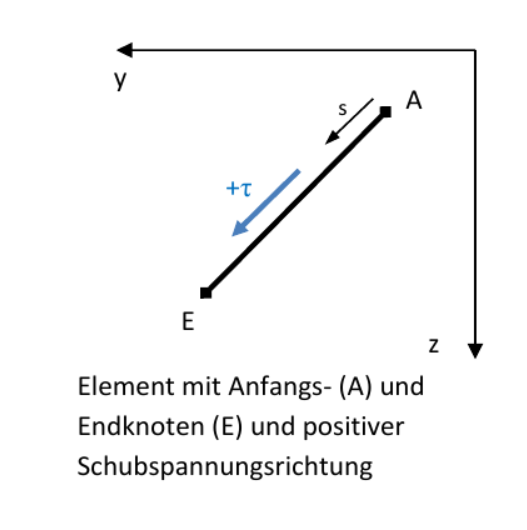
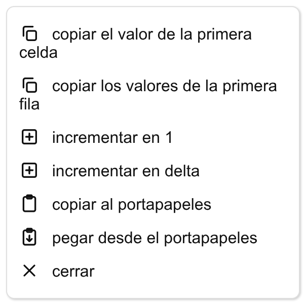
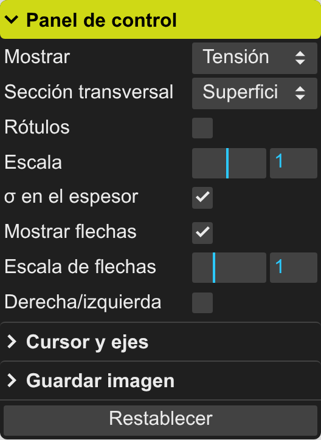
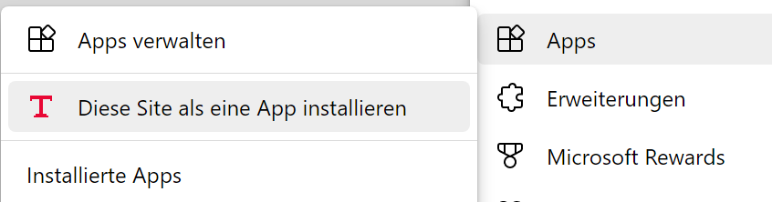

▶ Abrir duennQs – calcular propiedades y tensiones de secciones de pared delgada
Resumen
Sistema de coordenadas y criterio de signos
Ejemplo
Indicaciones para el uso de la app
Tablas y menú contextual
Archivos, PDF y copia de seguridad automática
Representación 2D (pestaña Sistema)
Representaciones 3D
Notación
Configuración
Instalar la app en el escritorio
Compatibilidad
Ayuda: mi teclado no tiene tecla de menos, teclado virtual
Contacto y notificación de errores
Con esta aplicación web puedes calcular las propiedades y las tensiones de secciones de pared delgada. Se utiliza el modelo de línea media (modelo de alambre), que se resuelve con el método de los elementos finitos [1], [2]. De forma similar a un pórtico o una celosía, la sección se describe mediante elementos rectos unidos en nudos. Cada elemento debe estar unido al menos a otro elemento, es decir, no puede haber elementos «sueltos» en la sección. Desde cada elemento tiene que existir un camino hacia todos los demás.
Las coordenadas de los nudos se introducen en un sistema auxiliar ȳ-z̄ cuyo origen puede elegirse libremente. Cada elemento tiene un nudo inicial y un nudo final y representa exactamente distribuciones cuadráticas de la tensión tangencial, por lo que no es necesario refinar la malla. Si miras a lo largo del elemento desde su inicio hasta su final, el lado derecho del elemento queda a tu mano derecha.
Como los elementos pueden tener propiedades de material distintas, hay que indicar valores de referencia para el módulo de elasticidad y el coeficiente de Poisson. Las propiedades calculadas son valores ideales referidos a estos valores de referencia. Si las utilizas para una barra en un programa de estructuras, introduce allí los mismos valores de referencia como datos del material.
Las tensiones normales debidas a N, My y Mz se calculan con las fórmulas habituales de la mecánica, suponiendo que las secciones planas permanecen planas (Bernoulli), y las debidas a Mω mediante la ordenada de alabeo. Las tensiones tangenciales son positivas cuando actúan en la dirección del sistema de coordenadas local del elemento. La dirección local positiva va del nudo inicial al nudo final.
Características del programa:
Criterio de signos de los esfuerzos

Criterio de signos del elemento
Este ejemplo se trata en [2]. Los datos de la sección se cargan automáticamente la primera vez que se inicia la app, con los esfuerzos Vz = 500 kN y My = 600 kNm.

En [2] la sección se estudia además con los siguientes esfuerzos:
Mxp = 250 kNm; Mxs = 150 kNm; Mω = 10 kNm²
Vy = 1000 kN; Vz = 500 kN
Material: E = 21.000 kN/cm²; ν = 0,3
La app tiene las pestañas Entrada, Resultados, Sistema, 3D, Info y ꔷꔷꔷ (configuración). Si pasas el ratón sobre un botón o lo mantienes pulsado con el dedo, aparece un breve texto de ayuda.
Como separador decimal se admiten la coma y el punto; no se admite separador de miles.
El texto del campo texto libre se incluye en la salida PDF, por ejemplo para el enunciado y tu nombre. Se admiten formatos HTML sencillos como <b>negrita</b>.
Si marcas todos los elementos tienen el mismo material, los valores de referencia se aplican a todos los elementos y se ocultan las columnas E y ν de la tabla de elementos. Con fy,Rd se marcan en rojo en la pestaña Resultados las tensiones equivalentes que lo superan; en 3D puede mostrarse junto con la tensión equivalente.
Calcular inicia el cálculo; después la app cambia a la pestaña Resultados. Si el botón Calcular aparece resaltado en color, la entrada ha cambiado desde el último cálculo.
El número de filas de las tablas de nudos y de elementos se cambia con − y + junto a Número de nudos y Número de elementos, o escribiendo el número. Las filas se añaden o se eliminan al final de la tabla.
En la tabla de elementos, + en la columna No inserta una fila encima y la papelera borra la fila. Ambas acciones pueden deshacerse y rehacerse. La tabla de nudos no lo ofrece a propósito: nod1 y nod2 de los elementos hacen referencia a los números de nudo, que de otro modo se desplazarían sin que te dieras cuenta. Así los números también siguen coincidiendo con tu croquis en papel.
Para agilizar la entrada puedes copiar y generar valores en las tablas. Selecciona un bloque
arrastrando sobre las celdas con el botón derecho del ratón pulsado. Al soltarlo aparece
el menú contextual.
Pantallas táctiles: activa primero Permitir la selección de celdas con el dedo
en la pestaña ꔷꔷꔷ. Después selecciona las celdas deslizando el dedo o el lápiz sobre ellas. Al
levantarlo aparece el menú contextual.

Menú contextual
Nota: a tabletas y smartphones también se les puede conectar un ratón y/o un teclado Bluetooth.
Con los botones situados sobre la entrada empiezas una entrada nueva, lees una entrada guardada o guardas la entrada actual. Los archivos de entrada tienen la extensión .duennqs (en Android .duennqs.json); los archivos .txt antiguos se siguen pudiendo leer. También puedes arrastrar un archivo con el ratón a la ventana de la app. Si hay cambios sin guardar, la app pregunta antes de empezar una entrada nueva o abrir otro archivo.
En la pestaña Resultados, el botón PDF guarda los resultados como archivo PDF, incluidos la entrada y el dibujo de la sección.
La entrada actual se guarda automáticamente en el navegador, por ejemplo cuando la app pasa a segundo plano o se cierra, y se recupera en el siguiente inicio. Esto no sustituye a guardar en un archivo.
Cuando hay una versión nueva de la app, se te pregunta si quieres recargarla. La entrada actual se conserva.
La pestaña Sistema muestra la sección en el plano ȳ-z̄ con el centro de gravedad, los ejes principales y el centro de esfuerzos cortantes. La cruz de captura muestra las coordenadas y se ajusta a los nudos, al centro de gravedad y al centro de esfuerzos cortantes; en los nudos muestra también la ordenada de alabeo ω. Números muestra u oculta los números de nudos y elementos, SVG guarda el dibujo como archivo SVG.
La pestaña 3D muestra los resultados en el espacio. Los valores se representan en la dirección del eje de la barra x. Con el ratón giras (botón izquierdo), desplazas (botón derecho) y haces zoom (rueda) en la vista; con dos dedos giras y haces zoom. Con un dedo consultas valores o desplazas la vista; el botón de abajo a la izquierda cambia entre ambos modos. La cruz de captura se ajusta a los puntos de la magnitud representada y muestra su valor.
Los ajustes están en el Panel de control. Solo muestra las opciones que corresponden a la representación elegida.

Panel de control
Incidencias de nudos de los elementos:
nod1 = número del nudo al inicio del elemento
nod2 = número del nudo al final del elemento
Ageom = área geométrica de la sección, sin tener en cuenta los datos del material.
Tensiones tangenciales por torsión primaria Mxp:
τxs0,L = tensión tangencial de la parte de sección abierta, lado izquierdo, lineal
en el espesor del elemento
τxs0,R = tensión tangencial de la parte de sección abierta, lado derecho
τxs1 = tensión tangencial de la parte de sección cerrada, constante en el espesor
del elemento
Tensiones tangenciales por esfuerzo cortante y torsión secundaria Mxs:
τxsa = tensión tangencial al inicio del elemento a
τxsm = tensión tangencial en el centro del elemento m
τxse = tensión tangencial al final del elemento e, todas constantes en el espesor
del elemento
El resto de la notación es análoga.
En la pestaña ꔷꔷꔷ ajustas el idioma (Language), la unidad de longitud, el tamaño de letra, la selección de celdas con el dedo, los colores de las tablas y el color de acento. La unidad de tensión sigue a la unidad de longitud: mm → N/mm²; cm → kN/cm²; m → MN/m². Los valores introducidos se convierten; después hay que volver a calcular. Los tamaños de letra grandes están pensados para la proyección con un proyector.
Puedes guardar la configuración como valores predeterminados en el almacenamiento local del
navegador; así vuelve a estar disponible tras un reinicio. Con el botón de debajo se borran de
nuevo los valores predeterminados.
El almacenamiento local (local storage) no son cookies. Esta aplicación web realiza todos los
cálculos localmente en el navegador con JavaScript. No se intercambian datos con ningún
servidor web, por lo que tras iniciar la app ya no hace falta conexión de red.
Esta aplicación está programada como aplicación web (web app), de modo que puedes instalarla en el escritorio en cualquier sistema operativo. Se crea un icono y la app se comporta como una app instalada desde una tienda. duennQs sigue ejecutándose en el navegador, pero sin elementos como la barra de direcciones. La instalación varía según el sistema operativo, la versión y el navegador.
En Android, una vez abierto duennQs en el navegador Chrome, elige Instalar aplicación en el menú de la aplicación (menú de tres puntos) arriba a la derecha y confirma el diálogo. En el escritorio aparece entonces un nuevo icono llamado duennQs.
En iOS utiliza el navegador Safari. Allí la orden se llama Añadir a pantalla de inicio (símbolo de compartir y después el símbolo con el más).
En Microsoft Windows el procedimiento es parecido al de Android. En el navegador Edge, el menú de la aplicación (menú de tres puntos) contiene la siguiente sección:

Las versiones recientes de Chrome pueden preguntar directamente si quieres instalar la app, véase el símbolo a la derecha de la barra de direcciones:

En macOS utiliza Microsoft Edge o Google Chrome para la instalación.
Firefox no admite la instalación por ahora. En Windows y Linux puedes pasar al modo de pantalla completa con la tecla F11 como alternativa.
En Android, iOS y Linux la app se desinstala borrando el icono del escritorio. En Windows se desinstala como un programa normal.
Probado en Windows 10↑, macOS Catalina 10.15.7↑, Ubuntu 22.04↑, Android 9–16 e iOS 15.7.3↑, en cada caso con la versión actual de Chrome, Chromium, Edge, Safari y Firefox. Solo se prueban y se admiten las versiones actuales de los navegadores.
En algunos dispositivos Android, sobre todo de Samsung, el teclado numérico no tiene tecla de menos. Por desgracia, la especificación HTML deja esto en manos del fabricante. En ese caso se recomienda un teclado virtual adicional, por ejemplo el teclado de Google Gboard de Play Store. Tras instalarlo, todavía hay que activar el teclado, mejor directamente en Play Store. Después puedes cambiar en cualquier momento entre los teclados instalados (símbolo abajo a la derecha del teclado).
Para sugerencias, deseos y notificaciones de errores, utiliza la dirección de correo statikverstehen@web.de (en alemán o en inglés). Al notificar un error suele ser útil adjuntar una copia del archivo de entrada.
[1] Matthias Kraus: Computerorientierte Berechnungsmethoden für beliebige Stabquerschnitte des Stahlbaus, tesis doctoral, Bochum 2005
[2] Matthias Kraus; Rolf Kindmann:
Finite-Elemente-Methoden im Stahlbau, 2.ª edición, Ernst W. & Sohn Verlag, 2019
Edición en inglés: Rolf Kindmann; Matthias Kraus:
Steel Structures: Design using FEM, Ernst W. & Sohn Verlag, 2011